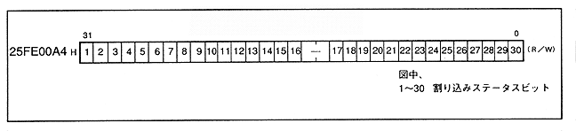

Figure 1.18 shows the interrupt status register map. This register is a readable / writable register. When reading, if bit data is 0, it indicates that no interrupt has occurred, and if it is 1, it indicates that an interrupt has occurred. When writing, writing 0 resets the interrupt and writing 1 holds the current interrupt status. The details of this register are described in detail in Chapter 3.
Figure 1.18 Interrupt status register map
